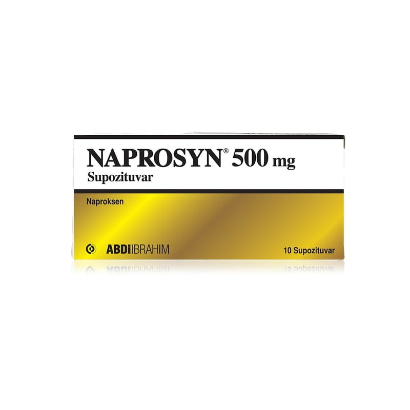

Naprosyn 500 mg Supozituar, 10 Adet

Ne için kullanılır
KT · Bölüm 1• NAPROSYN etkin madde olarak naproksen içeren, fitil formunda bir ilaçtır. • NAPROSYN, steroid olmayan antiinflamatuvar ilaçlar (NSAİİ) (iltihap giderici) olarak adlandırılan ilaç grubundan bir ağrı kesicidir. • NAPROSYN, 10 supozituvarlık ambalajlarda kullanıma sunulmaktadır.
NAPROSYN; • Travma veya diğer durumlara bağlı olarak ortaya çıkan eklem kıkırdağının harabiyeti, ağrı ve fonksiyon kaybıyla karakterize eklem iltihabı, • El ve ayak eklemlerinde gelişen ağrılı eklem iltihabı, • Özellikle omurgada gelişen romatoid artrit benzeri bir hastalık olan ankilozan spondilit, • Proteinin parçalanmasındaki bir soruna bağlı olarak bağ dokusu ve eklem kıkırdağında gözlenen şiddetli ağrı (akut gut) gibi romatizmal hastalıkların tedavisinde iltihap giderici ve ağrı kesici olarak, • Akut kas iskelet (kemik) sistemi ağrılarında • Kadınlarda adet sancılarına bağlı ağrılarda ağrıyı kesmek amacıyla, • Ortopedik ve cerrahi ameliyatlarda ağrı kesici olarak,
kullanılır.